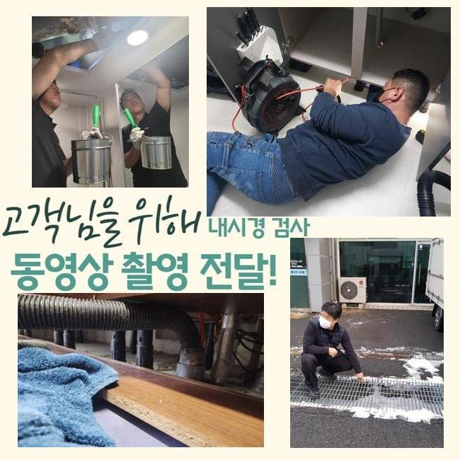
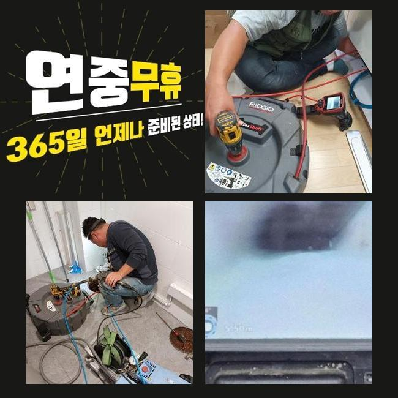
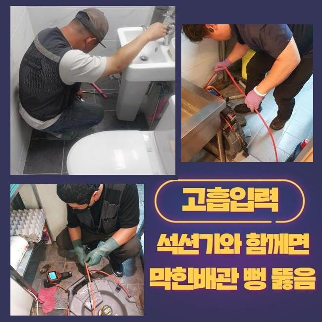
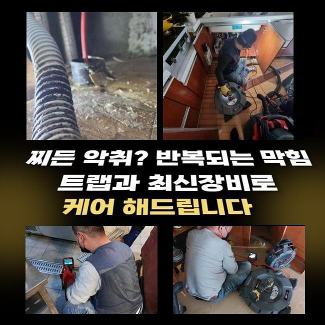
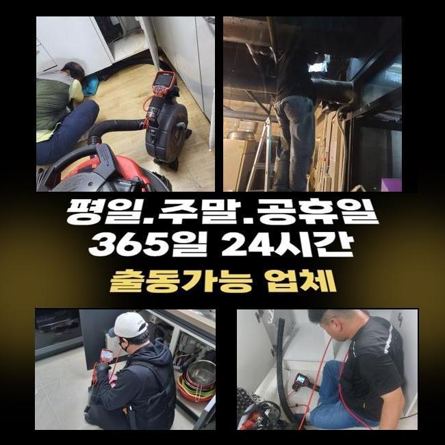
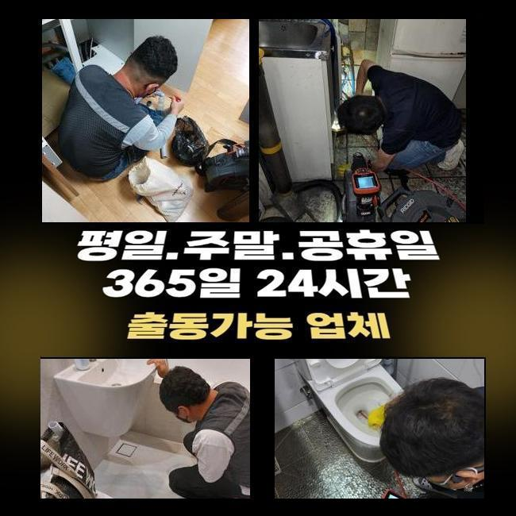

🏠 군포 하수구뚫는업체 광명 아파트배수관막힘
용인 하수구막힘 전문 시공 후기

📋 작업 개요
- 위치: 용인
- 서비스 유형: 하수구막힘, 배관막힘, 누수수리, 역류해결, 뚫는업체, 배관청소, 고압세척, 설비공사, 악취차단
- 작업 일시: 2024. 12. 9. 9:31
- 업체명: 하수구수사대 (010-5615-2118)
🔍 문제 상황
군포 하수구뚫는업체 광명 아파트배수관막힘
욕실이나 주방의 물막힘으로 난처하셨던 경험이 몇번은 있었을 것이라 예측을 할수 있는데요
이번에 소개해드리는 시공사례를 확인해 보신다면 도움될거라고 생각합니다
우리들은 저번주 화장실 물막힘으로 전화주신 의뢰인의 고민을 해결해드리고 왔어요
의뢰인은 화장실에 있는 생활하수가 지속적으로 소멸되지않아 제대로 사용을 못하셨는데 저희팀이 이동하여 배관을 제대로 검사하고 원인을 찾아냈어요
이어 해당하는 물질을 민첩하게 정리하여 의뢰인분이 시설물을 원만하게 쓰실수 있게 만들어 드렸죠
그리고 고객께 관리에 대한 요령을 말해드려 이후에 나타날수 있는 배관 고장을 예방토록 도움을 드렸어요
피트랩은 배관의 내측에서 오수가 원활히 흐르는걸 억제하여 배관막힘을 일으키기도 합니다
또 역류까지 생길수있는 경우 방수기능이 편하게 이루어지지 않아 추가적인 장애가 발현될수 있답니다
피트랩은 청결하게 설비를 유지하는데는 효율적이지만 슬러지가 고착화되고 막힘현상을 야기하는 단점 또한 있어요
그렇기에 피트랩을 쓰신다면 손님분의 청결관리가 필수입니다
누증된 이물을 치우고 부속품을 살펴본뒤 알맞은 시기에 세척을 이행하여서 배수시스템이 올바르게 기능하도록 조치해야 돼요
안그러면 배관이 지속적으로 차단되어 골치아픈 사태가 나타날수 있는 수 있죠
그렇기 때문에 주기적 진단업무와 청소가 요망되죠

🔎 원인 분석
💡 전문가 진단: 정밀 진단 장비를 사용하여 슬러지의 고착 여부를 판명하고 타격/세척 작업을 실시했습니다.
선결적으로 배수구 막힘을 해결하려 아래세대로 가서 파이프점검구를 열어보기로 했어요
찌꺼기들이 분출되어 주변이 지저분해지지 않게끔 보양지를 펼쳐서 세정을 이어나갔습니다
시공 전에는 주민들과의 분쟁을 방지하는 설명을 드리는편이 합당합니다
잘못하면 세척업무가 연기되거나 더 나아가 시공을 멈춰야 할수도 있죠
우리들은 관련된 다수의 경험들을 알고 있기에 정황에 여유를 가지고 대응하고 있어요
그러한 행동들을 토대로 원만하게 업무를 이행했고 배관고장을 처치할수가 있었습니다
해당하는 과정들을 발판삼아 이후 흡사한 문제들이 출몰하기 쉬운 경우에는 효율적으로 대처해나갈수 있을겁니다
배수가 안되는 상황에서 화학제품을 넣어보거나 집안의 도구를 통해서 해결하실수도 있겠지만 혹여나 그것으로도 복구가 무망하다면 배관전문가의 점검을 받는것이 좋죠
우리팀은 고가의 기기들과 테크닉으로 침착하게 막힘을 정리해 드린답니다
최근에 하수관과 연계된 기술자들이 많기에 결정과정에 곤란함이 있을것으로 압니다
그리고 확실치않은 회사들도 많이 있다고 알고 있어요
이러한 사람들이 내방하면 까다로운 문제들에 부닥쳤을때 작업을 멈추거나 적당히 정리해버리기도 해요
우리들은 이와 달리 맡은바 책임을 다해 시공을 끝낸다는걸 강조해 드립니다
그리고 의뢰자의 요구에 빠르게 반응해서 고장을 정리해 드려요

🔧 작업 과정
늦어지면 고장은 더욱더 심화되기 때문이에요
배관이 막혀버리면 역류증세가 나타나거나 타 세대로 전이될수 있죠
그럴때는 빨리 대응해야 돼요
지점에 당도하여 형편을 살펴보니 계속적으로 물방울이 배출되고 있었죠
잔재들이 뭉쳐서 생길수도 있으며 때에 따라 부속품에 크랙이 생겼을때도 있어요
그러하기에 처리하려면 근원 지점을 파악하는 것이 필수입니다
금번엔 찌꺼기 청소만으론 해결을 담보할수없는 사태였기에 그 부분을 고려해서 시공해 나갔습니다
이런 문제들이 나타나는건 파이프에 수도가 제대로 흘러내려가지 않아서죠
만일 이런 고장이 일어나면 즉시 저희측에 의뢰하시길 부탁드립니다
우선하여 하수관 내측에 잔존하는 것들을 빼내려 흡입기기를 쓰기로 했어요
석션장비는 하수관 내측의 슬러지를 능률적으로 정리되도록 돕고 배수문제를 처리합니다
흡입기계로 오물이 집중된 구간을 빠르게 처치하였습니다
다음엔 내시경기계를 넣어서 안쪽을 관찰했는데 오염물질이 소량 구부러진 부속에 잔류하고 있는걸 발견했죠
그 성분들을 없애려 샤프트 기계와 내시경기계를 동반하여 깨끗하게 세정하였어요
흡입기로 정리가 힘든 이물질은 해당 방식으로 처리할수가 있답니다
관 속에 이물이 잔류한다면 그것 때문에 추가적인 고장이 출몰하기 쉬운 수 있으므로 정밀한 세척은 기본중의 기본이죠
가끔 배관소제구를 오픈해서 부수적인 세정을 할때도 있어요
이러한 부품으로 인하여 시공이 지체될수도 있겠지만 저희들은 능숙한 테크닉으로 신속하게 해결해 드리고있어요
아랫층의 상단 관로 소제구를 개방하여 분쇄기를 넣어서 청소를 이어나갔어요
다수의 찌꺼기가 적층을 이룬게 확인되었죠
떨어져나간 슬러지들을 석션장비로 처치하고 하수관 내측을 내시경기계로 살펴본뒤 사용에 이상이 없단 사실을 확인하였어요
수리를 마친후 배관소제구를 덮은뒤 누수 여부를 살펴본뒤 지장이 없다는걸 인지했습니다
내시경기기를 활용하여 금번에 작업한 지점의 관로 차단은 갖가지 잔재들에 석회성분이 섞여 발생한 것으로 확인되었죠


✅ 작업 완료
이런 사태들은 우리팀이 늘상 마주하는 문제의 하나이고 정례적인 세척이 요망된다고 고지해드렸어요
빨간날에도 찾아뵙고 통수문제의 수리를 도와드릴 수 있어요
하수관 안쪽을 조사하는 내시경설비는 정체된 위치를 파악하고 근원적인 장애를 들춰내는데 지대한 공헌을 하죠
금번 욕실의 하수관 물막힘 사태는 파이프 벽면에 상존했었고 p트랩 근방에 크고작은 노폐물이 가득한게 확인되었죠
저희팀은 계속해서 기술수준을 올려서 만족스러운 수리를 제공하게끔 노력하겠습니다
하수관이 갑자기 막혔다면 방치하시지말고 즉시 우리에게 문의해 주세요




⚠️ 베란다 누수 및 방수 관리 방법
- ✅ 비가 많이 올 때 창틀 주변이나 아래층 천장에 얼룩이 생기는지 정기적으로 확인해 보세요.
- ✅ 우수관 주변 실리콘 마감이 들뜨거나 깨진 틈새가 있는지 손상 여부를 수시로 체크하세요.
- ✅ 베란다 바닥 타일의 줄눈(메지)이 소실되면 그 틈으로 물이 침투하여 누수가 유발됩니다.
- ✅ 누수 의심 증상 발견 시 방치하면 아래층 손실이 커지므로 즉시 전문가의 진단을 받으십시오.
💡 핵심 정리
- 확실한 장비 작업(내시경 점검 및 샤프트 스케일링)으로 원인을 뿌리 뽑습니다.
- 작업 후 1년 이내에 동일한 부위 재발 시 100% 무상 A/S 서비스를 보장합니다.
- 서울 · 경기 · 인천 전 지역에 24시간 언제든 긴급 출동할 수 있도록 항시 대기 중입니다.
❓ 자주 묻는 질문 (FAQ)
🚨 용인 하수구막힘 문제로 고민이신가요?
정확한 원인 진단과 확실한 시공으로 재발 없는 해결을 약속드립니다.
24시간 긴급 출동 | 서울 · 경기 · 인천 전지역 | 1년 내 재발 시 무상 A/S